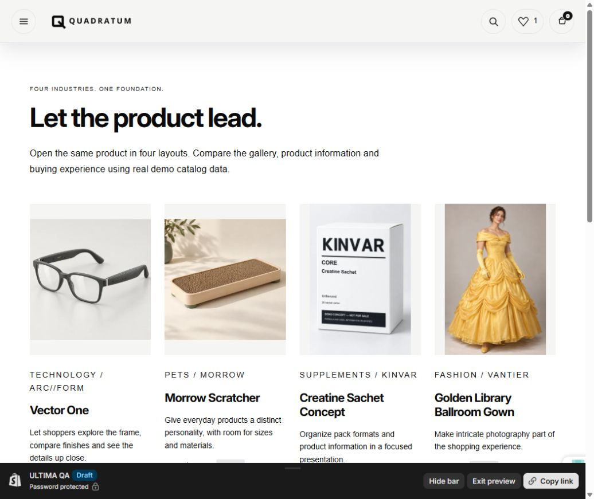

DO NOT SUBMIT YET. Close the six gates below before creating the final submission ZIP. A working preview and zero Theme Check errors do not establish full Theme Store readiness.
37/37Fixture suites pass
0Theme Check errors
5Merchant candidates
6Open release gates
Runtime: 3b7df7744358cfe7002ac79174618d14e00b79a1 on ultima/part-1.
Main unchanged: a2af1499177a83af6753795648fc286020fb2af3.
Open unpublished ULTIMA QA · Download this report as JSON

Implemented and installed
The new items below supplement the original tracker. Original 37-entry registry and 17 October verification checkpoint remain available with their individual limits.
RDY-001 · P1 · Product services were incomplete
Added native form payment terms, unit price updates, gift recipient opt-in and pickup rendering to five product hosts. Requests clear stale locations and cancel superseded requests.
Evidence: product-services.cjs: five Liquid hosts, gift properties/validation, pickup escaping/locale/races/retry. Real service eligibility and delivery remain GATE-03.
Implemented on ULTIMA; main not updated
snippets/product-services.liquid; snippets/gift-card-recipient.liquid; snippets/pickup-locations.liquid; sections/pickup-availability.liquid; assets/product-services.js
RDY-002 · P1 · Some product hosts lacked app/custom Liquid insertion
Added app and Custom Liquid blocks, with app output outside native purchase forms.
Evidence: Fixture tests pass. Real app install and merchant editor acceptance remain GATE-03.
Implemented on ULTIMA; main not updated
sections/main-product-classic.liquid; sections/main-product-modern-variant.liquid; sections/main-product-simple.liquid; sections/main-product-compact.liquid; sections/main-product-master.liquid; sections/featured-product-hero-banner.liquid; sections/call-to-action-featured-product.liquid
RDY-003 · P1 · Classic and Simple product summaries could not be rearranged
Introduced singleton title/price/status/purchase blocks, plus Classic vendor/excerpt. Migrated seven template configurations. Explicit legacy layout is retained. The unused Master laboratory host is excluded from merchant candidates.
Evidence: Reordering, removal, legacy compatibility and one-form isolation pass. Installed Classic exposes six blocks and updates Alloy SKU/price/URL correctly.
Implemented on ULTIMA; main not updated
sections/main-product-classic.liquid; sections/main-product-simple.liquid; templates/product.classic.json; templates/product.simple.json; listings/morrow/templates/product.json; listings/northstar/templates/product.json
RDY-004 · P1 · Variant arrays could omit products above Shopify’s 250-variant Liquid limit
Five main hosts use native option-value navigation for large products and serialize only the selected purchase record. Invalid combinations keep an empty ID and disabled buying controls. Cards and featured sections route large catalogs to the full product page.
Evidence: 600-variant fixture with selected ID outside the returned array passes all five hosts, including no-JS invalid selection. Actual large Shopify catalog and combined-listing acceptance remain GATE-03.
Implemented on ULTIMA; main not updated
snippets/product-option-navigation.liquid; snippets/product-purchase-data.liquid; snippets/product-purchase-variant.liquid; snippets/product-card.liquid; sections/collection-modern-quick-view.liquid
RDY-005 · P1 · Native swatches and font variants were incomplete
Native image/color swatches added to Modern/Simple radios and prioritized in Classic swatch mode. Heading/body font bold, italic and bold-italic variants now load when available.
Evidence: Theme Check zero errors. Product fixture matrix passes. Native platform swatch/color cases remain in GATE-03.
Implemented on ULTIMA; main not updated
snippets/product-option-swatch.liquid; snippets/product-variant-ui.liquid; snippets/theme-fonts.liquid
RDY-006 · P1 · Compact hid most product media and had a raw product form
Compact now uses a Shopify form, accelerated checkout, and an expandable all-media region. Quick view includes non-image media.
Evidence: Live Compact Vector One exposes ten media items. Its add, quantity update and removal were verified in the QA cart; no order placed.
Implemented on ULTIMA; main not updated
sections/main-product-compact.liquid; sections/collection-modern-quick-view.liquid; assets/q-quick-view.css
RDY-007 · P1 · Checkout defaults, attribution and readable source needed correction
Enabled available dynamic checkout defaults, kept recipient gift-card validation on the native cart path, restored unaltered powered_by_link, removed minification from the CSS build and expanded project CSS.
Evidence: Theme Check zero errors. The existing third-party model-viewer minified library remains a third-party exception.
Implemented on ULTIMA; main not updated
package.json; assets/theme.css; assets/editorial-story.css; assets/store-directory.css; sections/footer-five.liquid; listings/*/templates/product*.json
RDY-008 · P1 · Branded showroom content could leak into merchant installation
Added deterministic, hashed merchant candidates. Restored Quadratum retail configuration only from aa7a4e7e; current fixed runtime is retained. Excludes marketing assets/pages, laboratory templates, Master lab host, markets.json, source icon banks and project tooling.
Evidence: All five candidates stage successfully, contain all five listings and required templates, pass saved-setting validation, and have zero Theme Check errors. They are candidates, not submission ZIPs.
Implemented on ULTIMA; main not updated
scripts/build-submission-candidate.py; listings/quadratum/templates; listings/quadratum/sections
RDY-009 · P2 · The showroom did not prove multipurpose commerce clearly
Shortened the homepage journey and put actual technology, pet, supplement and fashion products ahead of deeper feature navigation. Each product opens in four presentations. Card heading hierarchy, prices and spacing were improved.
Evidence: Five viewport widths tested from 320 to 1440 with zero horizontal overflow. Final mobile/desktop images saved. Sold-out examples reflect actual catalog state.
Implemented on ULTIMA; main not updated
sections/commerce-showcase.liquid; assets/commerce-showcase.css; templates/index.json; templates/page.products.json
RDY-010 · P2 · Builders lacked a source-backed configuration reference
Added a generated schema inventory, exact template names, five preset names and a choose/compose/review workflow. The downloadable inventory is not automatically loaded by storefront pages.
Evidence: Manifest is generated from source. No token-saving benchmark or connector editing capability is claimed.
Implemented on ULTIMA; main not updated
sections/builder-reference.liquid; assets/quadratum-builder-manifest.json; templates/page.builder-reference.json; scripts/refine-quadratum-showroom.py
RDY-011 · P2 · Mobile header left too little logo space
Reduced small-screen gaps and moved Wishlist into the mobile menu at narrow widths; search remains an icon with an accessible name.
Evidence: Installed mobile header and final screenshot verified. Wishlist remains reachable through the menu.
Implemented on ULTIMA; main not updated
assets/header-two.css; sections/header-two.liquid
What still prevents submission
GATE-01 / P1 / NOT VERIFIEDBenchmark performance and accessibility
Evidence: No current benchmark Lighthouse report is present. Current QA is password-protected. Fixture tests and responsive screenshots are not Lighthouse evidence.
Action: Load Shopify’s benchmark dataset into an authorized test store, run home/product/collection on desktop and mobile, retain the reports, fix measured failures, and repeat.
Close when: Recorded averages meet Shopify’s current 60 performance / 90 accessibility thresholds, with manual keyboard and screen-reader checks.
Owner: Engineering + owner-provided benchmark store
GATE-02 / P1 / NOT VERIFIEDFive preset demos and install parity
Evidence: Five local candidates are prepared. Only unpublished ULTIMA QA received this upload. Historical ten-brand demos were not upgraded or certified during this pass.
Action: Assign a suitable client-transfer demo store to each preset; install the corresponding candidate, use a coherent catalog and realistic content, and compare new installation with its demo. Owner configures or explicitly authorizes required test payment settings.
Close when: Five industry-consistent demos, install parity screenshots, test checkout configuration and authenticated app/asset inventory. No payment configuration or live publication was changed here.
Owner: Owner + engineering
GATE-03 / P1 / PARTIALReal Shopify service and browser acceptance
Evidence: Native cart, normal variants, Compact media and responsive QA passed. Recipient delivery, enabled pickup locations, eligible installments, large catalogs, combined listings, Markets, real app blocks and full browser coverage have not been certified.
Action: Provide authorized fixtures and verify gift recipient email/date, pickup changes, payment terms, discounts/selling plans/quantity rules, native swatches, >250 variants, app installation, localization, product media, search, cart and accessibility in supported desktop/mobile browsers.
Close when: No unresolved critical journeys; logs/screenshots tied to the same runtime commit. Test checkout orders require a verified test gateway and explicit authorization.
Owner: Engineering with eligible test-store fixtures
GATE-04 / P1 / OPENMerchant documentation and public support
Evidence: config/settings_schema.json still links documentation to main/docs/phase6 and support to GitHub issues. This is not a verified public merchant help center and support form.
Action: Approve the public help/support destination and support operator; finish merchant setup, templates, sections, product services, troubleshooting and support policy there. Configure a usable contact form and receipt workflow, then update theme metadata to verified URLs.
Close when: Public URLs work without a repository login; listing links are correct; support scope, required contact fields and two-business-day response ownership are established.
Owner: Owner + engineering
GATE-05 / P1 / OWNER REVIEWRights, originality and listing approval
Evidence: Brand-kit preview and guide supplied by owner; legal rights, original code provenance, exclusivity and name availability are not proven by a code scan.
Action: Confirm source/license provenance and rights to all ten demo brands and media, verify naming availability and Partner account eligibility, finalize commercial listing data and release notes.
Close when: Owner-approved provenance/asset register and listing. No legal agreement or Theme Store submission was accepted by the agent.
Owner: Theme owner
GATE-06 / P2 / OPENMerchant editor complexity and warning triage
Evidence: Each candidate has 346 warnings, including 117 excessive-setting counts and 36 Liquid-complexity warnings. A warning is not automatically a rejection; zero errors is not a full compliance certificate.
Action: Review actual merchant tasks in each preset, simplify confusing controls, check unused/orphaned code and record an explicit rationale or minimal fix for every remaining warning class.
Close when: Usable editor flows, reviewed warning dispositions, no hidden feature or broken control in demo walkthroughs.
Owner: Engineering + design review
Launch-compliance matrix
Checked against Shopify’s official requirements on 18 October 2026. Status describes the evidence available for this build; it does not imply Shopify has reviewed it.
Five presets. Ten brands. One shared runtime.
- Keep the shared runtime on ultima/part-1 until the release gates are closed. Main remains at a2af1499177a83af6753795648fc286020fb2af3.
- Use the five merchant candidates for five dedicated preset installations. Maintain their /listings template and group overrides over one common runtime; do not merge whole historical demo branches back into release code.
- Keep the ten-brand navigation and branded showroom as a marketing deployment. Retain four product presentations plus collection/sidebar/editorial/minimal variations, blog/article examples and supportive pages there. Each retail preset should show only relevant presentations in its own navigation.
- Complete GATE-01 through GATE-06 with commit-pinned evidence. When closed, propose release/quadratum-1.0 from the approved ULTIMA commit and build one parent submission ZIP with the five listings.
- Owner reviews the exact ZIP hash, five demo URLs, benchmark reports, rights and support URLs before approving submission and any merge or publication. No new release branch, ZIP, merge or publication was performed in this pass.
Approved presets: Quadratum (ARC//FORM retail direction), Morrow, Northstar, Kinvar and Vantier. Gallery: ARC//FORM, Folio & Field, Morrow, OpenPath Living, Northstar Systems, EVERREAL, FAIRWAY MOTOR CO., ORVAINE, VANTIER and KINVAR.
Verification evidence
Recorded audit baseline SHAs for all ten demo branches
These are the branch baselines from the entry-by-entry reconciliation. They are not a claim that installed historical store themes contain this new runtime.